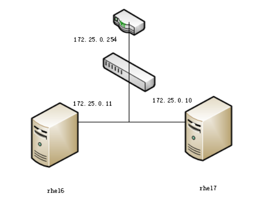

NS @ A 172.25.0.11 www A 172.25.0.10 MX 5 mail mail A 172.25.0.10 ftp A 172.25.0.10 bbs CNAME ftp
2)配置反向解析172.25.0.10和172.25.0.11；
3)要求rhel6和rhel7这两台服务器的域名解析服务器为172.25.0.11这台服务器。
实验准备阶段
画出网络拓扑图
规划不同服务器需要安装的软件(os–soft版本)
开始安装
配置服务
启动服务
测试排错
详细步骤概览
num
step
man
1)
安装软件
bind bind-chroot
2)
查看软件架构
rpm -ql
日志
/var/log/named.log
数据
/var/named/
配置
/etc/named.conf
/etc/named.rfc1912.zones
3)
修改配置文件
4)
启动服务
service
named
daemon
named
4.1）
排除错误
看日志
5)
测试
nslookup
5.1）
排错
看日志
网络拓扑图

规划服务器软件
开始安装
[root@rhel6 ~]# yum install -y bind bind-chroot Loaded plugins: product-id, refresh-packagekit, security, subscription-manager This system is not registered to Red Hat Subscription Management. You can use subscription-manager to register. server | 3.9 kB 00:00 Setting up Install Process Resolving Dependencies --> Running transaction check ---> Package bind.x86_64 32:9.8.2-0.17.rc1.el6_4.6 will be installed ---> Package bind-chroot.x86_64 32:9.8.2-0.17.rc1.el6_4.6 will be installed --> Finished Dependency Resolution
Dependencies Resolved
================================================================================ Package Arch Version Repository Size ================================================================================ Installing: bind x86_64 32:9.8.2-0.17.rc1.el6_4.6 server 4.0 M bind-chroot x86_64 32:9.8.2-0.17.rc1.el6_4.6 server 71 k
# 正解析 # 域名-->ip zone "uplooking.com" IN { type master; file "named.uplooking"; allow-update { none; }; }; # 反解析 # ip--->域名 zone "0.25.172.in-addr.arpa" IN { type master; file "named.arpa.uplooking"; allow-update { none; }; };
/var/named/named.uplooking
$TTL 1D @ IN SOA @ rname.invalid. ( 0 ; serial 1D ; refresh 1H ; retry 1W ; expire 3H ) ; minimum 主机名 主要记录 ip NS @ A 172.25.0.11 www A 172.25.0.10 MX 5 mail mail A 172.25.0.10 ftp A 172.25.0.10 bbs CNAME ftp
[root@rhel6 named]# vim /etc/named.rfc1912.zones zone "uplooking.com" IN { type master; file "named.uplooking"; allow-update { none; }; allow-transfer { 172.25.0.10; }; ===>允许从机172.25.0.10来读取 };
zone "0.25.172.in-addr.arpa" IN { type master; file "named.arpa.uplooking"; allow-update { none; }; allow-transfer { 172.25.0.10; }; ===>允许从机172.25.0.10来读取 };
[root@rhel6 named]# pwd /var/named [root@rhel6 named]# ll total 40 drwxr-x---. 6 root named 4096 Aug 2 10:30 chroot drwxrwx---. 2 named named 4096 Aug 2 11:03 data drwxrwx---. 2 named named 4096 Aug 2 15:06 dynamic -rw-r-----. 1 root named 271 Aug 2 13:59 named.arpa.uplooking -rw-r-----. 1 root named 1892 Feb 18 2008 named.ca -rw-r-----. 1 root named 152 Dec 15 2009 named.empty -rw-r-----. 1 root named 152 Jun 21 2007 named.localhost -rw-r-----. 1 root named 168 Dec 15 2009 named.loopback -rw-r-----. 1 root named 224 Aug 2 11:34 named.uplooking drwxrwx---. 2 named named 4096 Aug 14 2013 slaves [root@rhel6 named]# vim named.uplooking $TTL 1D @ IN SOA @ rname.invalid. ( 20160802 ; serial 1D ; refresh 1H ; retry 1W ; expire 3H ) ; minimum NS @ A 172.25.0.11 www A 172.25.0.10 MX 5 mail mail A 172.25.0.10 ftp A 172.25.0.10 bbs CNAME ftp ~
[root@rhel6 named]# service named restart Stopping named: . [ OK ] Starting named: [ OK ] [root@rhel6 named]# service iptables stop iptables: Firewall is not running. [root@rhel6 named]# getenforce Enforcing
从服务器
[root@rhel7 ~]# cat /etc/resolv.conf # Generated by NetworkManager domain example.com search example.com nameserver 172.25.254.254 [root@rhel7 ~]# yum install -y bind* [root@rhel7 ~]# vim /etc/named.conf [root@rhel7 ~]# vim /etc/named.rfc1912.zones zone "uplooking.com" IN { type slave; <== 定义类型为奴隶 slave masters { 172.25.0.11; }; <== 告诉计算机我的主人 master 是谁 file "slaves/uploooking.com.zone"; <== 告诉计算机 zone 数据库地址在哪里,奴隶有专门的目录 allow-update { none; }; };
zone "0.25.172.in-addr.arpa" IN { type slave; masters { 172.25.0.11; }; file "slaves/arpa.uplooking.zone"; allow-update { none; }; };
服务启动与关闭
[root@rhel7 ~]# systemctl stop firewalld [root@rhel7 ~]# getenforce Enforcing [root@rhel7 ~]# systemctl start named [root@rhel7 ~]# ll /var/named/slaves total 8 -rw-r--r--. 1 named named 381 Aug 2 03:54 arpa.uplooking.zone -rw-r--r--. 1 named named 463 Aug 2 03:54 uploooking.com.zone
11.0.25.172.in-addr.arpa name = uplooking.com. > 172.25.0.10 Server: 172.25.0.10 Address: 172.25.0.10#53
10.0.25.172.in-addr.arpa name = bbs.uplooking.com. 10.0.25.172.in-addr.arpa name = www.uplooking.com. 10.0.25.172.in-addr.arpa name = ftp.uplooking.com. 10.0.25.172.in-addr.arpa name = mail.uplooking.com. > exit
排错记录
服务启动不了
[root@rhel7 ~]# systemctl start named Job for named.service failed. See 'systemctl status named.service' and 'journalctl -xn' for details.
[root@rhel7 ~]# systemctl status named.service named.service - Berkeley Internet Name Domain (DNS) Loaded: loaded (/usr/lib/systemd/system/named.service; disabled) Active: failed (Result: exit-code) since Tue 2016-08-02 04:19:20 EDT; 23s ago Process: 2297 ExecStartPre=/usr/sbin/named-checkconf -z /etc/named.conf (code=exited, status=1/FAILURE)
Aug 02 04:19:20 rhel7 systemd[1]: Starting Berkeley Internet Name Domain (DNS)... Aug 02 04:19:20 rhel7 named-checkconf[2297]: /etc/named.rfc1912.zones:51: missing ';' before '}' Aug 02 04:19:20 rhel7 systemd[1]: named.service: control process exited, code=exited status=1 Aug 02 04:19:20 rhel7 systemd[1]: Failed to start Berkeley Internet Name Domain (DNS). Aug 02 04:19:20 rhel7 systemd[1]: Unit named.service entered failed state.
ps：当服务启动不了的时候，报错内容中说我们可以通过以下两个命令来查看，systemctl status named.service 或者 journalctl -xn此时我们可以去执行以下上面命令中的任何一个，都可以看到详细的报错信息。
Aug 02 04:19:20 rhel7 named-checkconf[2297]: /etc/named.rfc1912.zones:51: missing ';' before '}'
[root@rhel7 ~]# systemctl status named named.service - Berkeley Internet Name Domain (DNS) Loaded: loaded (/usr/lib/systemd/system/named.service; disabled) Active: failed (Result: exit-code) since Tue 2016-08-02 04:50:39 EDT; 1min 42s ago Process: 6541 ExecStartPre=/usr/sbin/named-checkconf -z /etc/named.conf (code=exited, status=1/FAILURE)
Aug 02 04:50:39 rhel7 named-checkconf[6541]: zone 1.0.0.0.0.0.0.0.0.0.0.0.0.0.0.0.0.0.0.0.0.0.0.0.0.0.0.0...al 0 Aug 02 04:50:39 rhel7 named-checkconf[6541]: zone 1.0.0.127.in-addr.arpa/IN: loaded serial 0 Aug 02 04:50:39 rhel7 named-checkconf[6541]: zone 0.in-addr.arpa/IN: loaded serial 0 Aug 02 04:50:39 rhel7 named-checkconf[6541]: zone uplooking.com/IN: loaded serial 20160802 Aug 02 04:50:39 rhel7 named-checkconf[6541]: zone 19.25.172.in-addr.arpa/IN: loading from master file nam...ound Aug 02 04:50:39 rhel7 named-checkconf[6541]: zone 19.25.172.in-addr.arpa/IN: not loaded due to errors. Aug 02 04:50:39 rhel7 named-checkconf[6541]: _default/19.25.172.in-addr.arpa/IN: file not found Aug 02 04:50:39 rhel7 systemd[1]: named.service: control process exited, code=exited status=1 Aug 02 04:50:39 rhel7 systemd[1]: Failed to start Berkeley Internet Name Domain (DNS). Aug 02 04:50:39 rhel7 systemd[1]: Unit named.service entered failed state. Hint: Some lines were ellipsized, use -l to show in full.
zone "uplooking.com" IN { type master; file "named.uplooking"; allow-update { none; }; allow-transfer { 172.25.19.10;}; };
zone "19.25.172.in-addr.arpa" IN { type master; file "named.uplooking.arpa"; allow-update { none; }; allow-transfer { 172.25.19.10; }; };
[root@rhel7 ~]# ll /var/named/named* -rw-r-----. 1 root named 330 Aug 2 04:50 /var/named/named.arpa.uplooking -rw-r-----. 1 root named 2076 Jan 28 2013 /var/named/named.ca -rw-r-----. 1 root named 152 Dec 15 2009 /var/named/named.empty -rw-r-----. 1 root named 152 Jun 21 2007 /var/named/named.localhost -rw-r-----. 1 root named 168 Dec 15 2009 /var/named/named.loopback -rw-r-----. 1 root named 295 Aug 2 04:50 /var/named/named.uplooking
ps:问题出在数据文件名和配置文件中指定的数据文件名不一致。
file "named.uplooking.arpa";
/var/named/named.arpa.uplooking
主辅同步缓冲文件只有一个
[root@rhel7 ~]# ll /var/named/slaves/ total 4 -rw-r--r-- 1 named named 386 Jan 1 02:46 uplooking123.zoo